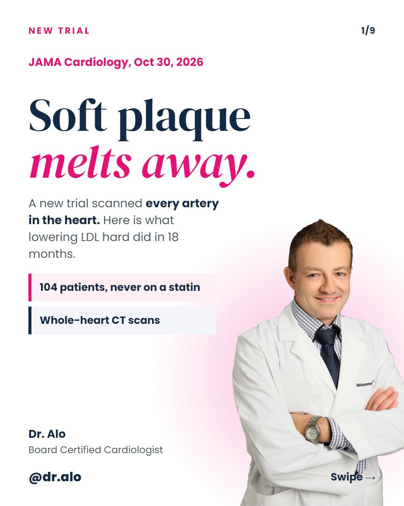

Rosuvastatin vs. Atorvastatin
Which is better?
Comparison of the two high-intensity statins: both lower LDL-C by 50% or more, rosuvastatin is more potent per milligram, but in the randomized LODESTAR trial 3-year clinical outcomes did not differ significantly. The goal is reaching the appropriate LDL target on maximally tolerated therapy.
EVIDENCE BASED DEBATE ON🌸🌸
ATORVASTATIN OR ROSUVASTATIN — WHICH ONE SHOULD I CHOOSE??????
👉Both atorvastatin and rosuvastatin are potent, evidence-based statins and can provide high-intensity lipid lowering:
🔹 Atorvastatin 40–80 mg
🔹 Rosuvastatin 20–40 mg
Both typically reduce LDL-C by ≥50%.
So, is one actually better? 👇🟥point No.1
LDL-C LOWERING — ROSUVASTATIN HAS THE EDGE👉👉Milligram-for-milligram, rosuvastatin is generally more potent at lowering LDL-C.
In the randomized LODESTAR comparison among patients with coronary artery disease, rosuvastatin produced slightly lower achieved LDL-C levels than atorvastatin....👉 If achieving a very low LDL-C remains difficult, rosuvastatin may offer an advantage in potency.
🟨Point No.2
CARDIOVASCULAR OUTCOMES — NO CLEAR WINNER
Greater LDL lowering does not necessarily mean that rosuvastatin produces better clinical outcomes than atorvastatin.👉👉In LODESTAR, the 3-year composite of:
❤️ All-cause death
❤️ Myocardial infarction
❤️ Stroke
❤️ Coronary revascularization
was not significantly different between the two groups....🎯 The goal is therefore not simply to choose the “stronger” statin—it is to achieve the appropriate LDL-C reduction and risk-based LDL-C goal with maximally tolerated therapy.
🟫POINT NO.3
PLAQUE STABILIZATION & REGRESSION — BOTH ARE EXCELLENTIntensive statin therapy:
🐹 Reduces plaque lipid content
🐹 Decreases vascular inflammation
🐹 Stabilizes vulnerable plaque
🐹 Can promote plaque regression
There is no compelling clinical reason to choose one solely because of a presumed superior plaque-stabilizing effect.➡️Point NO.4
NEW-ONSET DIABETES — AN INTERESTING SAFETY SIGNAL❇In LODESTAR, new-onset diabetes requiring medication occurred more frequently with rosuvastatin:
🔴 Rosuvastatin: 7.2%
🔵 Atorvastatin: 5.3%
⚠️ This does not mean rosuvastatin should be avoided in patients at risk for diabetes.
For patients who have an indication for statin therapy, the cardiovascular benefit generally outweighs the relatively small diabetogenic risk.
👉 In patients with prediabetes or high metabolic risk, however, this safety signal may be considered when either statin can adequately achieve the LDL-C goal.☮POINT NO.5
⚕⚕ CATARACTS — DON'T OVERINTERPRET THE SIGNAL
👉👉LODESTAR also reported more cataract surgery with rosuvastatin:
🔴 Rosuvastatin: 2.5%
🔵 Atorvastatin: 1.5%
However, this was a secondary safety outcome.
❌ It does not prove that rosuvastatin causes cataracts.
👉 Cataract risk alone should not currently determine which statin you prescribe.🟤Point no.6
TRIGLYCERIDES — BOTH LOWER THEMBoth atorvastatin and rosuvastatin can significantly lower triglycerides, particularly when baseline TG levels are elevated.
⚠️ It is not accurate to state that atorvastatin universally has a superior triglyceride-lowering effect.
For significant hypertriglyceridemia, management should instead consider:
🔹 TG level
🔹 ASCVD risk
🔹 Secondary causes
🔹 Pancreatitis risk🟥Point.No.7
PRACTICAL DIFFERENCES CAN HELP YOU CHOOSE💊 ROSUVASTATIN
🌸🌸Greater LDL-C lowering milligram-for-milligram
🌸🌸 Relatively few CYP3A4-mediated interactions
🌸🌸 Useful when aggressive LDL-C lowering is needed
💊💊 Dose limitations/adjustment may be necessary in significant renal impairment💊 ATORVASTATIN
🤎 Potent LDL-C lowering
🤎 Extensive cardiovascular outcomes evidence
🤎 Generally does not require renal dose adjustment
⚠️ CYP3A4 metabolism creates greater potential for drug interactions🎯 SO WHICH ONE SHOULD YOU CHOOSE?
👉 Need maximum LDL-C lowering with a relatively small dose?
➡️ Rosuvastatin may be preferable.👉 Prediabetes/high metabolic risk?
➡️ Either remains appropriate; if equivalent LDL-C control can be achieved, the LODESTAR diabetes signal can be considered when individualizing therapy.👉 Significant renal impairment?
➡️ Atorvastatin is often simpler to use.👉 Multiple CYP3A4-interacting medications?
➡️ Rosuvastatin may be preferable.👉 Already at LDL-C goal and tolerating your statin?
➡️ Usually there is no reason to switch simply because another statin is more potent.❤️ BOTTOM LINE
There is no universal winner.
Rosuvastatin is generally more potent milligram-for-milligram, but greater potency does not automatically translate into superior clinical outcomes compared with atorvastatin.
The best statin is the maximally tolerated regimen that safely achieves the LDL-C reduction and risk-based LDL-C goal required for that individual patient.
And if maximally tolerated statin therapy does not get the patient to goal, the next question may not be:
“Atorvastatin or rosuvastatin?”
It may be:
“Does this patient need additional lipid-lowering therapy?”
❤️ Treat the patient, the cardiovascular risk, and the LDL-C goal—not the statin name.
Remember me in your prayers share with your colleagues 🙏
#Atorvastatin #Rosuvastatin #Statins #Dyslipidemia #Hyperlipidemia #LDLCholesterol #LDL #Cholesterol #LipidManagement #ASCVD #Atherosclerosis #CoronaryArteryDisease #CAD #CardiovascularDisease #Cardiology #PreventiveCardiology #CardiovascularPrevention #HeartHealth #Diabetes #Triglycerides #EvidenceBasedMedicine #ClinicalCardiology #MedicalEducation #CardiologyEducation #CardiovascularEducation

Louis explains that unless triglycerides exceed about 400-500 mg/dL, drug-lowering them makes little difference to plaque or hard outcomes. In BRIDGE-TIMI 73a olezarsen cut triglycerides 64% with no plaque volume change; VLDL particles are atherogenic but are already counted by apoB.

A shared infographic summarizes how statins work and how the choice varies by patient: atorvastatin after MI/ACS and usable in CKD, rosuvastatin as the most potent with few interactions. General reference without study data.

Summarizes Li et al. 2021, a meta-analysis of 31 IVUS studies (4,997 patients) showing lipid-lowering therapy lowers atheroma volume, with maximal regression at LDL below 80 and HDL above 45 mg/dL. It also covers the SATURN analysis, where rosuvastatin 40 mg regressed plaque more than atorvastatin 80 mg.

A shared post on FLOWPROMOTE (JAMA Cardiology, Oct 30, 2026): 104 statin-naive people with coronary narrowing were scanned with CT, then given atorvastatin 40 mg or rosuvastatin 40 mg plus ezetimibe 10 mg. After 18 months LDL fell to 42.5 versus 69.5 mg/dL, and soft plaque shrank 28.2% versus 20.0%. Louis shares it with hashtags only.

Louis shares an NEJM review on the inherited basis of coronary artery disease. Takeaways: LDL and apoB are causal risk factors, genetic risk is modifiable, and treatment should be proportionate to absolute risk with lifestyle emphasis in lower-risk people.

Louis says replacing saturated with unsaturated fat is believed to be a main reason heart deaths dropped in Finland in the 1970s and 1980s. The shared cardiologist's post describes North Karelia's 700 per 100,000 CVD death rate in 1972, with 24% of calories from saturated fat, and a 20% cholesterol drop with coronary deaths in working-age men falling 82%.